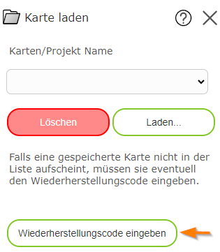

Loading a Map
With this tool, you can load saved maps again. The following are generally loaded:
Map view
Visible topic layers
Drawings created with the Drawing (Redlining) tool
Note
Note: as already explained for the Save Map tool, the presentation of a map may change from time to time. This also changes the presentation of saved maps!
In the tool dialog, an assigned map name can be entered. Clicking in the field shows suggestions to help find the correct project. Saved maps always relate to a user, which means saved maps belonging to another user cannot be loaded.
Loading a Map as an Anonymous User
As already described for the Save Map tool, ideally the user should be known when saving a map, so that the map can be assigned to the correct user again.
If the map viewer is offered on the internet, access is generally anonymous. When saving, a recovery code is therefore generated, which is stored in the browser and archived by the user.
If you switch browsers (or clear the browser cache from time to time) or devices, the recovery code must be entered again. This can be done both in the Save Map and in the Load Map dialog:

Further notes on the recovery code are given in the description of the Save Map tool.